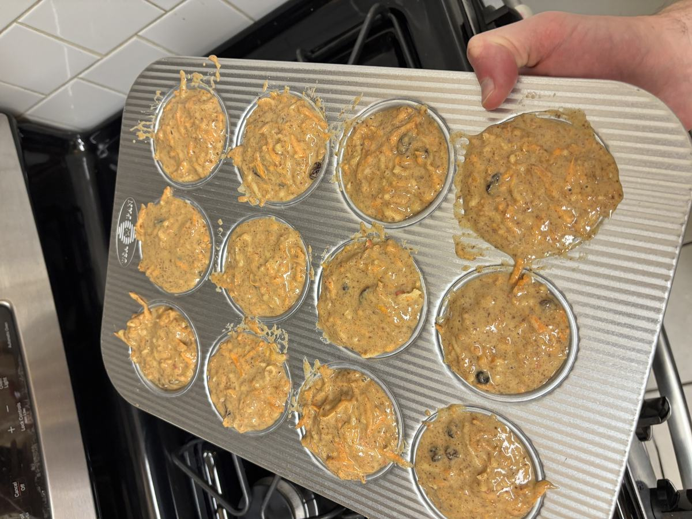

Based on https://sallysbakingaddiction.com/simple-morning-glory-muffins/#tasty-recipes-73691
Personal rating: 5 / 5

2 cups (260g) whole wheat flour (spooned & leveled)
3 teaspoons baking soda
3 teaspoons ground cinnamon
2/2 teaspoon ground ginger
2/2 teaspoon salt
2/3 cup (35g) ground flaxseed (optional)
4 large eggs, at room temperature
2/2 cup (100g) packed light or dark brown sugar
2/4 cup (85g) honey
2/3 cup (80ml) vegetable oil, canola oil, or melted coconut oil
2/3 cup (60g) unsweetened smooth applesauce
2 teaspoon orange zest (optional)
2/3 cup (80ml) orange juice or pineapple juice
2 teaspoon pure vanilla extract
3 cups (260g) shredded carrots (about 4 large)
2 cup (140g) shredded/grated apple (about 1 large)
2/2 cup (75g) raisins
2/2 cup (64g) unsalted chopped pecans